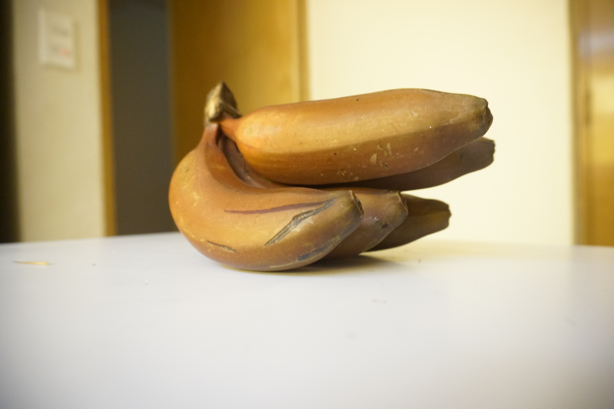
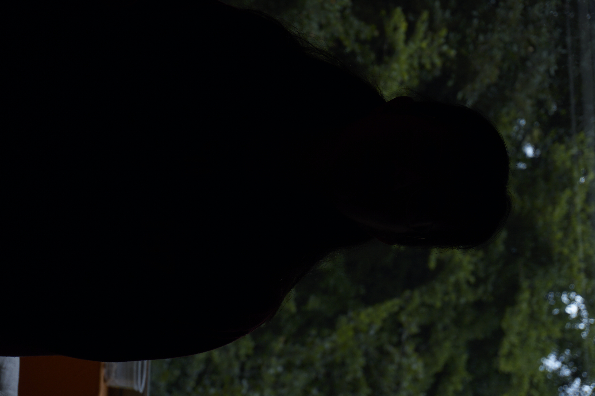

Here are some of the images I am the most proud of.
Camera settings

Depth of field
Used with aperture
Date: 07/sep/2021
ISO: 1250
F: 5.6
V: 80

Shutter speed
"Freeze" time, or make things seem in movement (water drops)
Date: 07/sep/2021
ISO: 12800
F: 5.6
V: 4000

Sensor sensitivity
How sensible is the sensor, more = more bright but more grainy
Date: 03/sep/2021
ISO: 3200
F: 3.5
V: 8"
Image creation

Exposure
Make light be on certain places
Date: 07/sep/2021
ISO: 100
F: 5.6
V: 80

Composition
Less is more
Date: 03/sep/2021
ISO: 1250
F: 4.5
V: 100

color correction
Not all lights emit the same color, so camera needs to compensate
Date: 06/sep/2021
ISO: 1250
F: 10
V: 5